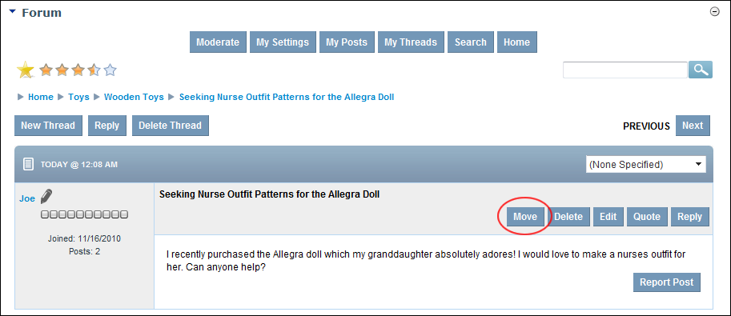
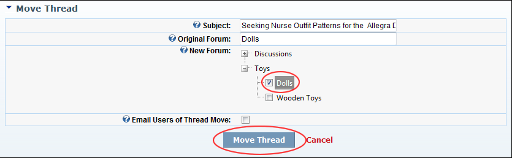

Moving a Thread
How to move a thread to a new forum in the Forum module. Moderators require moderate permissions on the particular forum to move a thread. See "Setting Forum Permissions"
- Locate and open the required thread. See "Viewing any Post"

- Click the Move link beside the post. This opens the Move Thread page.
- At New Forum, associated with the new forum for this new thread.
- Optional. At Email Users of Thread Move, to notify all users participating in this thread that this thread has been moved - OR - for no email notification.

- Click the Move Thread link.